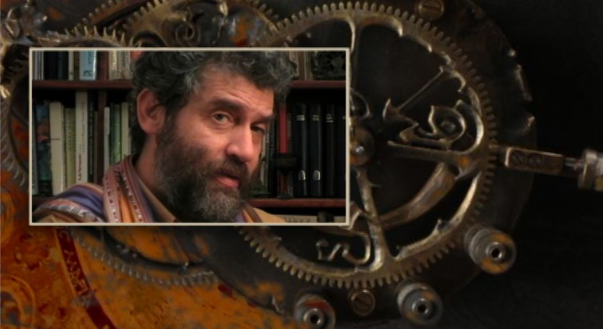
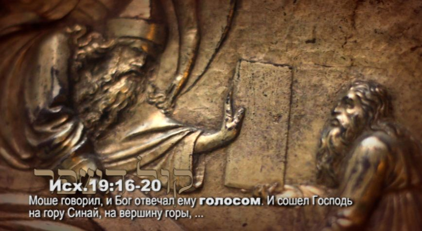
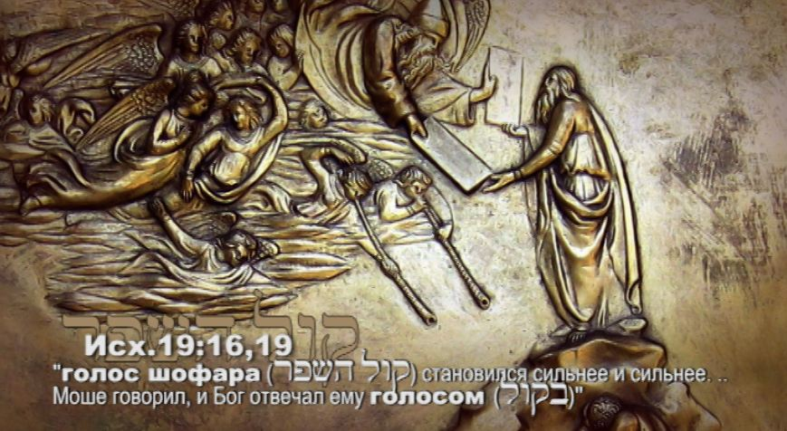
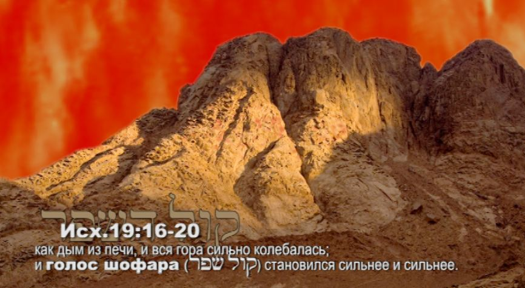

The Voice of the Shofar, Part 3. Sinai: a Remembrance of Blowing
Our fathers first heard the sound of the shofar in the Sinai desert three and a half thousand years ago. Since then this sound has accompanied Israel everywhere.
"Remember the days of old, consider the years of many generations; ask thy father, and he will declare unto thee, thine elders, and they will tell thee…" (Deut. 32:7)
The Feast of the Remembrance of the Sound of the Shofar carries a command already in its name: to remember, to recall. "In the seventh month, in the first day of the month, shall be a solemn rest unto you, a memorial proclaimed with the blast of the shofar" (Lev. 23:24).
It is a very important feast, one of the series of biblical Jewish feasts of which the Creator said: "These are My appointed seasons, the appointed seasons of the LORD."
Pesach (Passover), Shavuot (Pentecost), Zikhron Teruah (the Feast of Trumpets), Yom Kippur (the Day of Atonement), Sukkot (the Feast of Tabernacles): all these seasons are bound up with remembrance. But the Feast of Blowing is a day of special remembrance, when the unique sound of the shofar, which makes the heart tremble, comes alive in our souls.
The revelation at Sinai
Our fathers first heard the sound of the shofar in the Sinai desert three and a half thousand years ago.
On the morning of the third day of the third month after the children of Israel left the land of Egypt, they were waiting for the LORD to come down upon the mountain in the sight of all the people.
(Exod. 19:16–20) "And there were thunders and lightnings, and a thick cloud upon the mount, and the voice of a shofar (קול השופר, kol ha-shofar) exceeding loud; and all the people that were in the camp trembled… Now mount Sinai was altogether on smoke, because the LORD descended upon it in fire; and the smoke thereof ascended as the smoke of a furnace, and the whole mount quaked greatly. And when the voice of the shofar waxed louder and louder, Moshe spoke, and God answered him by a voice. And the LORD came down upon mount Sinai, to the top of the mount; and the LORD called Moshe to the top of the mount; and Moshe went up." In this text we meet the mysterious word shofar for the first time and hear the sound of its voice for the first time. Here it appears as a musical instrument in the hands of God Himself, carrying the breath of His mouth. It is no accident that Scripture repeatedly uses the word "voice" of the shofar, as if it were speaking of a person and not an object.
"The voice of the shofar (קול השופר, kol ha-shofar) waxed louder and louder. Moshe spoke, and God answered him by a voice" (Exod. 19:16, 19). In this verse the word "voice" refers both to the shofar and to God. The voice of the shofar and the voice of God merged and sounded as one.




It was a great and unique event, the like of which had never happened before or since, to this very day. God called out with His voice to give birth to a people for Himself. With the voice of the shofar He called Israel into His holiness, to be a people set apart for Him.
"And who is like Thy people, like Israel, a nation one in the earth, whom God went to redeem unto Himself for a people, and to make Him a name, and to do for Thy land great things and tremendous…?" (2 Sam. 7:23)
The shofar that sounded from heaven carried an overwhelming, mighty power: the power of transformation, of change, of correction. A great power of prophecy is also hidden in this voice.
The prophetic cry of the shofar pierces time and reaches far into the future, moving a person to speak the words of God and inspiring him to create…
"Uru, uru yeshenim mi-shenatkhem" (Heb. "Awake, you sleepers, wake from your sleep), remember your Maker and turn to Him!" This is how the great Jewish rabbi and philosopher Rambam understood the main message of the shofar.
The sounds of the shofar inspire awe and touch the deepest strings of the soul. They call us to a broken heart and to humility. They are like a groan and a sigh, a sob and a cry.
"The shofar makes a simple sound, a simple weeping without any modulation, and so it has the power to open the soul. No words in the world can express the feelings of a child crying at night and calling for his mother. The shofar makes just such a child's cry," says Rabbi Akiva Tatz of these sounds.
*
A midrash on the giving of the Torah at the voice of the shofar
"And they said unto Moshe: 'Speak thou with us, and we will hear; but let not God speak with us, lest we die.'" (Exod. 20:19)
The midrash hands down a moving ancient tradition. Twenty-six generations had passed since the creation of Adam. And the heavens were set in motion, for the Creator was waiting for the proclamation and longed to make a covenant with His people. The children of Israel washed their garments and prepared themselves, waiting for the appointed day. And the Most High came down upon mount Sinai in a pillar of fire, surrounded by His hosts. The earth shook and the mountain quaked. The children of Israel heard the voice of the shofar, and it grew louder and louder, until the people could hardly bear it.
The people saw tongues of flame rising to the sky, flashes of lightning and the mountain smoking like a furnace. But more terrible than this, they saw a voice: the Voice of the Shofar and the Voice of God. (The Torah bears witness to this: "And all the people saw the thunderings, and the lightnings, and the voice of the shofar…" (Exod. 20:18).)
Like fiery substances, waves of sound, the Commandments of the Most High went out from His mouth, flew through the whole camp and came to rest, standing before each person. The Ten Words addressed the people of Israel in the singular, not the plural, so that every Jew would know that the Torah speaks directly to him and that keeping its instructions is his personal duty. And afterwards the fiery image turned into the writing of God on the tablets of stone.
And it was terrible, and such a mighty presence of God was impossible for man to bear, so that their souls left their bodies. And the Torah pleaded for life to be given back to the children of Israel, saying: "King of the world and Creator of the universe, You dreamed of this day as a day of great joy; will it now turn into a day of great weeping?"
And He returned their souls to their bodies. But when they recovered, the sons of Yaakov again felt fear before the Voice of the Most High and the sight of the voice of the shofar, and they fled in haste as far as seventy-seven stadia, to the very end of the camp (twelve miles, about 14 km). And the angels of His host carefully brought them back to where they had been before, to the foot of the mountain, so that they would stand before the Creator and be witnesses of His Commandments.
And the children of Israel were terribly afraid, and begged that they would no longer hear the voice of the LORD nor see the sight of the blowing of the shofar, but that Moshe would receive these words from the mouth of the Eternal One and pass them on to the people.
The apostle Paul and the deacon Stephen most likely refer to this extraordinary midrash when they say that the Torah was given to Israel through the ministry of angels.
(The deacon Stephen: "ye who received the law as it was ordained by angels…" (Acts 7:53); and the apostle Paul: "…the law… was ordained through angels by the hand of a mediator" (Gal. 3:19).)
***
"And Moshe said unto the people: 'Fear not; for God is come to prove you, and that His fear may be before you, that ye sin not.' And the people stood afar off; but Moshe drew near unto the thick darkness where God was." (Exod. 20:20–21)
And Israel was plunged into great fear and into the deepest prophetic inspiration. There, at the foot of mount Sinai, the sounds of the shofar and the words of God put into the mouths of our fathers a great prophetic petition before the Most High. For the first time man asks for himself a Messiah, a Mediator: "Give us one who can stand before You, hear Your words and pass them on to us, so that we may keep them." They asked for a Redeemer who would come down from heaven and teach the people truth. And this would be a great blessing not only for the descendants of Avraham; all the families of the earth would be blessed in Him.
And Moshe answered the people: "According to all that thou didst desire of the LORD thy God in Horeb in the day of the assembly, saying: 'Let me not hear again the voice of the LORD my God, neither let me see this great fire any more, that I die not.' And the LORD said unto me: 'They have well said that which they have spoken.'" (Deut. 18:16–17)
He liked their words, and they pleased God. He liked their request because they asked according to His will, for from the beginning this had been His intention: to send His Word, the Redeemer, the Messiah, born before all creation.
Our fathers asked in great fear and trembling, and they received a promise from the Eternal One: "And the LORD said unto me: 'They have well said that which they have spoken. I will raise them up a prophet from among their brethren, like unto thee; and I will put My words in his mouth, and he shall speak unto them all that I shall command him.'" (Deut. 18:17–18) In the sound of the shofar thundering from heaven there in the Sinai desert (in the book of Shemot, Exodus), in the voice of the perfect sacrifice (Yeshayahu, Isaiah chapter 53), sounded the great promise of the Most High and the hope of Israel: to HEAR the voice of the coming Messiah and to receive Him as Redeemer and Deliverer, as the Firstborn of the Father.
"Shema Yisrael! Hear, O Israel: the LORD our God, the LORD is one. And thou shalt love the LORD thy God with all thy heart, and with all thy soul, and with all thy might. And these words, which I command thee this day, shall be upon thy heart." (Deut. 6:4–6)
SHEMA YISRAEL is the central proclamation and prayer of Israel, spoken by Jews in moments of mortal danger and of peace, of disaster and of great joy, to this very day.
In ancient Hebrew the word SHEMA (lishmoa) means to hear, to take in and to obey. "Hear, O Israel!" means: be obedient, submit to the LORD your God. Shema!…
When God commanded Israel to blow the shofar, He also commanded them to listen to the voice of the shofar, to listen to His voice. This is a special kind of listening, in which there is a desire to hear, an open heart and waiting before the Creator… Hear, O Israel!
— Part 1 — Part 2 — Part 4 — Part 5
***
See also my film on this subject, "The Voice of the Shofar". Studio TORAH-ART. Composer Daniel Kruglov.
***
More video on keeping the commandment of blowing the shofar: see here.
Author: Ephraim Kalish / Torah-Art